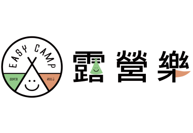
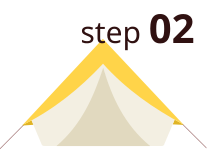
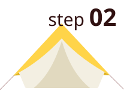

 露營樂 可按照縣市別, 篩選露營區。 愛露營 可透過北中南東､ 離島等地理分區, 篩選營區。  確認露營地點的設備 由於露營場地的型態會影響露營裝備的選擇, 初步篩選地點後, 需留意各營區的海拔高度､ 水電及衛浴設備等規劃。 海拔 1,000公尺以上高海拔：日夜溫差大, 注意白天防曬及夜晚保暖。 500公尺以下低海拔：適合親子同樂, 留意蚊蟲叮咬。 營位 確認營位大小, 避免帳篷超過營位範圍。 確認營位數, 衡量場地是否會過於擁擠。 設備 確認場地是否提供水電､ 盥洗空間､ 淋浴用品､ 公共冰箱等。 場地是否提供裝備租借, 或者補給站可購買裝備及飲食。
愛露營 可透過北中南東､ 離島等地理分區, 篩選營區。  確認露營地點的設備 由於露營場地的型態會影響露營裝備的選擇, 初步篩選地點後, 需留意各營區的海拔高度､ 水電及衛浴設備等規劃。 海拔 1,000公尺以上高海拔：日夜溫差大, 注意白天防曬及夜晚保暖。 500公尺以下低海拔：適合親子同樂, 留意蚊蟲叮咬。 營位 確認營位大小, 避免帳篷超過營位範圍。 確認營位數, 衡量場地是否會過於擁擠。 設備 確認場地是否提供水電､ 盥洗空間､ 淋浴用品､ 公共冰箱等。 場地是否提供裝備租借, 或者補給站可購買裝備及飲食。
海拔 1,000公尺以上高海拔：日夜溫差大, 注意白天防曬及夜晚保暖。 500公尺以下低海拔：適合親子同樂, 留意蚊蟲叮咬。 營位 確認營位大小, 避免帳篷超過營位範圍。 確認營位數, 衡量場地是否會過於擁擠。 設備 確認場地是否提供水電､ 盥洗空間､ 淋浴用品､ 公共冰箱等。 場地是否提供裝備租借, 或者補給站可購買裝備及飲食。